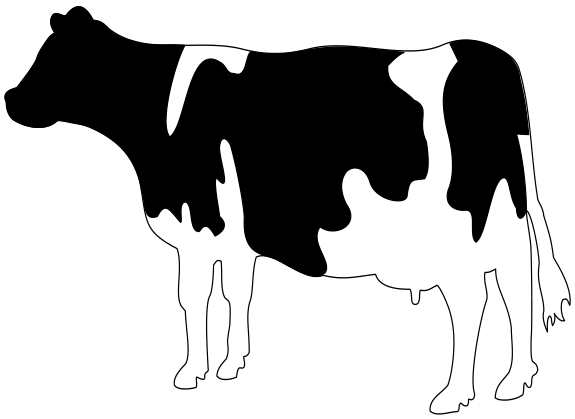
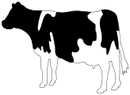
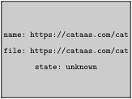
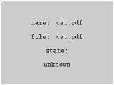

Syntax (autogenerated)
| \externalfigure[...][...][...=...,...] | |
| [...] | file |
| [...] | name |
| ...=...,... | inherits from \setupexternalfigure |
Description
The \externalfigure command is used to include an external figure/movie inside ConTeXt. Includes both local files or remote files hosted on HTTP servers.
The simplest way to insert an image is to use:
-
\externalfigure[cow.pdf]
- 
This command places the PDF image cow.pdf in a
\vbox; the width and height of the image are equal to the natural dimensions of the image.
To set the width of the image to a specific size, say 1cm, use:
-
\externalfigure[cow.pdf][width=1cm]
which gives
Similarly, to set the height of the image to a specific size, say 2cm, use:
-
\externalfigure[cow.pdf][height=2cm]
which gives
- 
If only the width or height of the image is specified, the other dimension is scaled appropriately to keep the aspect ratio.
To include a specific page, say page 5, of a multi-page PDF file, use:
\externalfigure[filename.pdf][page=5]
These four variations cover 90% of the use cases.
How the filetype is determined
- File extension : Normally, the type of file is determined by the extension of the file (in a case-insensitive manner).
-
method=typeIf the file uses a non-standard extension, specify the file type usingmethod=typewhere type is any of the file extensions that is recognized by \externalfigure . -
auto
: When the file extension is
.autoormethod=autois used, ConTeXt reads the first few bytes of the file to determine the filetype. Such an auto-discovery is useful for remote images that do not have a file extension.
If the extension of the file is not specified, ConTeXt searches for all possible extensions in the order given below.
Historically, when postscript output was used, the order in which the file extensions were searched depended on the output format (PDF or PS). With recent releases of ConTeXt, PDF is the default output format, so for all practical purposes, the order in which the file extensions are searched is fixed.
Natively supported image formats
The following image formats are supported natively in MkIV:
-
PDF
: File extension
.pdf. By default, mediabox is used to determine size. Usesize=artboxto use artbox . -
MPS (MetaPost Output)
: File extension
.mp,.mpsor.[digits]. -
JPEG
: File extension
.jpgand.jpeg -
PNG
: File extesion
.png -
JPEG 2000
: File extesion
.jp2 -
JBIG
and
JBIG2
: File extension
.jbig,.jbib2, and.jb2
Additionally supported natively in LMTX:
-
SVG
: File extension
.svgand.svgzvia an internal Metapost conversion; useconversion=mp
Image formats supported through external converters
The following formats are converted to PDF by external programs before being included. The conversion generates a new file with a prefix m_k_i_v_ and a suffix .pdf added to the name of the original file (the original extension is not removed). The result is cached, and the conversion is rerun only if the timestamp of the original file is newer than the converted file.
-
For the conversion to work,
inkscapeshould be in thePATH. The following command is used for conversion:
inkscape [inputfile] --export-dpi=600 -A [outputfile]
- (Note: Conversion to PNG is also possible, but I don’t know the details on how to active that -- 03:32, 29 November 2012 (CET)).
-
PS
and
EPS
: File extension
.epsand.ai. Converted to PDF using Ghostscript .
-
For the conversion to work, on Windows
gswin32cmust be in thePATH; on other platformsgsmust be in thePATH. The following command line options are passed to Ghostscript
gs -q -sDEVICE=pdfwrite -dNOPAUSE -dNOCACHE -dBATCH [resolution] -sOutputFile=[outputfile] [inputfile] -c quit
-
By default, the
[resolution]is prepress . Useresolution=lowto change the[resolution]to screen andresolution=meidumto change the[resolution]to ebook .
-
GIF
: File extension
.gif. Converted to PDF using GraphicsMagick .
-
For the conversion to work,
gmshould be in thePATH. The following command is used for the conversion:
gm convert [inputfile] [outputfile]
-
TIFF
: File extensions
.tiffand.tif. Converted to PDF using GraphicsMagick .
-
For the conversion to work,
gmshould be in thePATH. The following command is used for the conversion:
gm convert [inputfile] [outputfile]
Supported movie formats
The following movie formats are supported.
-
QuickTime
: File extension
.mov. -
Flash Video
: File extension
.flv -
MPEG 4
: File extension
.mp4
| NOTE: Movie inclusion only works in a few PDF viewers |
Support for special TeX formats
The following special formats are supported:
- buffer : Typeset the buffer with the given name and include the result as a PDF file.
-
tex
: Typeset the TeX file using
contextand include the result as a PDF file
-
cld
: Typeset the
ConTeXt Lua document
using
contextand include the result as a PDF file.
Command options
interaction
By default, the interactive elements of the included PDF file are discarded. To enable the interactive elements of the included PDF file, use
\externalfigure[filename.pdf][interaction=yes]
Example
Including a local image
In the example below, no file name extension is used. ConTeXt searches for an image file in the following order: cow.pdf, cow.mps, cow.1, cow.2, etc., cow.jpg, cow.png, cow.jp2, cow.jbig, cow.jbig2, cow.jb2. The file cow.pdf, which is distributed as part of the ConTeXt distribution, is found and displayed.
-
\externalfigure[cow][width=4cm]
ConTeXt distribution also includes a sample image hacker.jpg. To include it use:
-
\externalfigure[hacker][height=3cm]
Include a remote image
-
\externalfigure[https://cataas.com/cat][method=jpg]
- 
(This is not supported in the wiki.)
Beware, ConTeXt doesn’t follow redirections. It also doesn’t work with SVGs.
Rotate an image
-
Rotate by 90, 180, or 270 degrees
: Use
orientation=90|180|270to rotate an image in multiples of 90. For example:
-
\externalfigure[mill][orientation=180]
-

- Rotate by an arbitrary angle : Use \rotate command.
-
\rotate[rotation=45]{\externalfigure[mill]}
Flip an image
Use \mirror to horizontally flip an image
-
\mirror{\externalfigure[cow][width=3cm]}
Error Messages
When a file is specified by its full name, and is not found, no error message is displayed in the log; rather a gray box is shown in the generated PDF which indicates that the figure was not found. For example (note that cat.pdf should not exist in the current directory)
-
\externalfigure[cat.pdf]
- 
Tracking
The following trackers are available for \externalfigure (MkIV only)
- graphics.locating : Gives details about where the image files are searched, what strategy was used to infer the file format, and what was the inferred file format.
- graphics.conversion : Gives details about the conversion from one file format to another
- graphics.inclusions : Gives details of including a movie
The trackers are enabled using
\enabletrackers[...tracker...]
or
context --trackers=list [filename]
When the graphics.locating tracker is enabled, including a known file displays the following information on the terminal:
graphics > inclusion > locations: local,global graphics > inclusion > path list: . .. ../.. graphics > inclusion > strategy: unknown format, prefer quality graphics > inclusion > found: ./cow.pdf -> /opt/context-minimals/texmf-context/tex/context/sample/cow.pdf graphics > inclusion > format natively supported by backend: pdf
If the requested file does not exist, the following information is displayed:
graphics > inclusion > locations: local,global graphics > inclusion > path list: . .. ../.. graphics > inclusion > strategy: forced format pdf graphics > inclusion > not found: cat.pdf graphics > inclusion > not found: ./cat.pdf graphics > inclusion > not found: ../cat.pdf graphics > inclusion > not found: ../../cat.pdf graphics > inclusion > format not supported: %s
When the graphics.conversion tracker is enabled and a file type that requires conversion (e.g., PS) is included, the following message is displayed on the terminal:
graphics > inclusion > checking conversion of './tiger.ps' (./tiger.ps): old format 'ps', new format 'pdf', conversion 'default', resolution 'default' graphics > inclusion > no need to convert './tiger.ps' (tiger.ps) from 'ps' to 'pdf' graphics > inclusion > new graphic, hash: m_k_i_v_tiger.ps.pdf->1->crop->unknown->unknown->unknown->
When the graphics.inclusion tracker is enabled and a movie is included, the following message is displayed on the terminal:
graphics > inclusion > including movie 'clip.mov': width 5594039.4330709, height 5594039.4330709
See also
- \defineexternalfigure to define a collection of settings
- \setupexternalfigure to define a different collection of settings
- \useexternalfigure to define an image+settings combination
- \definegraphictypesynonym to map a file extension to a particular image type handler
- Using Graphics
- Including audio and video to add audio and video contents.
Help from ConTeXt-Mailinglist/Forum
All issues with: